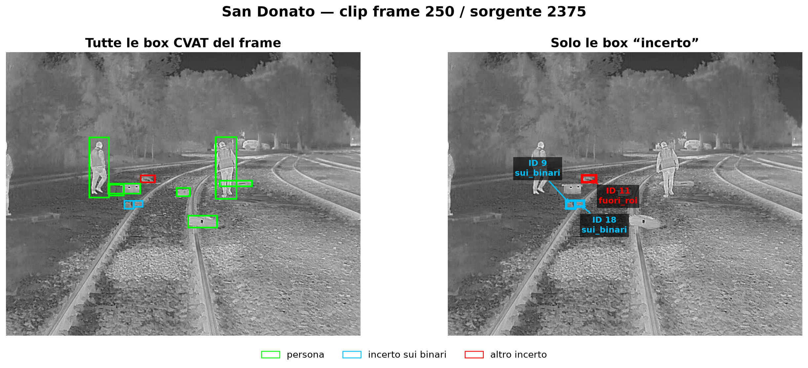
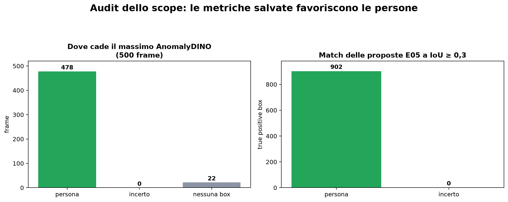

Relazione breve e corretta · 6 luglio 2026
Cosa è stato davvero
riconosciuto finora
Localizzazione di anomalie in immagini termiche ferroviarie — sintesi leggibile per il ricevimento del 7 luglio 2026
Sì: le persone sono state riconosciute e localizzate.
Grounding DINO trova le persone; SAM2 le segmenta e le segue; AnomalyDINO concentra spesso il proprio massimo sulle persone.
No: gli oggetti “incerto” sui binari non sono ancora stati dimostrati.
Le metriche principali E01–E09 hanno valutato soprattutto le persone. L'audit appena eseguito trova zero localizzazioni degli oggetti incerto con le proposte E05.
E10 ha verificato esplicitamente il problema
Aumentare i candidati da 1 a 3 o 5 migliora la copertura delle persone, ma produce ancora zero localizzazioni delle 1.000 box incerto_sui_binari.
Michele Rais
Tesi triennale in Ingegneria Informatica
01 · Ground truth
Che cosa è stato annotato in CVAT?
20
track nell'intero export v2: 14 persona e 6 incerto
12
track visibili nella clip sperimentale: 8 persona e 4 incerto
3.732
box persona nei 500 frame
1.473
box incerto nei 500 frame

Verde: persona. Azzurro: incerto sui binari. Rosso: altro incerto. Nella clip, le track incerto 9 e 18 sono sui binari per tutti i 500 frame, per un totale di 1.000 box.
Nel file CVAT la classe principale è sempre anomalia, ma l'attributo tipo contiene soltanto persona e incerto. “Box” e “pallet” erano prompt esplorativi di Grounding DINO, non classi validate della ground truth.
02 · Audit degli esperimenti
Che cosa ha valutato davvero ogni prova?
| ID | Che cosa ha fatto | Oggetto valutato | Stato |
|---|
| E01 | SAM2 da box manuale e tracking | Una persona | quantitativo |
| E02 | Grounding DINO periodico + SAM2 | Tre persone | quantitativo |
| E03 | Prompt person, box, pallet, obstacle, anomaly | Proposte su un frame | solo qualitativo |
| E05 | AnomalyDINO 16-shot | Decisione di frame; localizzazione persona | quantitativo |
| E06 | AnomalyVFM zero-shot | Decisione di frame; pointing persona | quantitativo |
| E07 | AnomalyVFM su dataset portuale | Anomalia temporale, non box | controllo esterno |
| E08 | AnomalyDINO su dataset portuale | Anomalia temporale, non box | controllo esterno |
| E09 | Massimo AnomalyDINO → SAM2 | Migliore box persona | quantitativo |
| E10 | Cinque candidati → SAM2 | Persona e incerto separati | quantitativo |
Conclusione dell'audit: la campagna ha provato bene la componente “persona”, la classificazione di frame e il raffinamento con SAM2. E10 mostra invece che il protocollo attuale non recupera gli oggetti incerti sui binari.
03 · Risultati difendibili
Che cosa possiamo affermare con sicurezza?
SAM2 funziona con un candidato corretto
E01: una persona seguita per 490 frame comuni, IoU media 0,755.
Il detector periodico trova nuovi ingressi
E02: tre persone; IoU media aggregata 0,707 e F1@0,5 pari a 0,946.
AnomalyDINO punta spesso alle persone
E05: il massimo cade dentro una persona in 478 frame su 500.
SAM2 rifinisce la geometria
E09: IoU media 0,501 → 0,717; hit@0,5 0,534 → 0,934.

Questi risultati dimostrano una buona pipeline per candidati-persona. Non devono essere presentati come prova generale di riconoscimento di ogni ostacolo ferroviario.
04 · Lacuna emersa
Gli oggetti incerti sui binari sono stati localizzati?

Risposta: no, con il protocollo testato.
Il massimo AnomalyDINO colpisce una persona in 478/500 frame, ma una box incerto in 0/500. E10 arriva a 2.038 predizioni con K=5, ma mantiene 0 true positive sulle 1.000 box incerto_sui_binari.
Questo non significa necessariamente che il modello “non veda” alcuna regione dell'oggetto: significa che, con la conversione in punto/box e le soglie usate, non esiste ancora una corrispondenza quantitativa sufficiente con quelle box.
E03 ha prodotto candidati per i prompt box e pallet, ma il test era su un solo frame e non possedeva una ground truth semantica separata. È quindi un'osservazione qualitativa, non un risultato di riconoscimento.
05 · Risultato E10
Più candidati aiutano le persone, non gli oggetti
E10 ha confrontato 1, 3 e 5 massimi AnomalyDINO spazialmente separati, trasformati in box SAM2 e valutati separatamente sulle persone e sugli oggetti incerti.
| Persona @ IoU 0,3 | Precision | Recall | F1 |
|---|
| K=1 | 0,976 | 0,131 | 0,231 |
| K=3 | 0,844 | 0,298 | 0,440 |
| K=5 | 0,583 | 0,318 | 0,412 |

Incerto sui binari: 0 true positive
K=1, K=3 e K=5 ottengono precision, recall e F1 pari a zero sia a IoU 0,3 sia a 0,5. K=3 è invece il miglior compromesso per le persone.
06 · Come dirlo al professore
Spiegazione in due minuti
«Ho riesaminato lo scope delle metriche. I risultati migliori riguardano soprattutto le persone. Ho quindi eseguito E10 con fino a cinque candidati e metriche separate. Il recall delle persone sale dal 13,1% al 31,8%, ma nessuna configurazione recupera gli oggetti incerti sui binari. Il limite è quindi confermato e richiede una scelta metodologica diversa.»
Tre domande da porre
- Le track `incerto` 9 e 18 devono essere rinominate con una categoria più precisa dopo una nuova verifica in CVAT?
- La tesi deve concentrarsi sulla localizzazione di persone in area ferroviaria oppure mantenere l'obiettivo più ampio di ostacolo/anomalia generica?
- Dato che E10 non recupera gli oggetti, conviene introdurre un detector dedicato oppure trattare questo limite come risultato conclusivo?
Dire esplicitamente il limite aumenta la credibilità del lavoro. Il punto non è mostrare che “funziona tutto”, ma dimostrare con metriche quali componenti funzionano, su quali anomalie e dove falliscono.
07 · Numeri e tracciabilità
Riepilogo essenziale
| Dato | Valore | Interpretazione |
|---|
| Clip principale | 500 frame, 640×512 | San Donato, 85–105 s |
| GT persona | 3.732 box, 8 track visibili | Scope quantitativo principale E01–E09 |
| GT incerto | 1.473 box, 4 track visibili | Non valutato correttamente prima dell'audit |
| Incerto sui binari | 1.000 box, track 9 e 18 | Scope prioritario E10 |
| Massimo E05 | 478 persona; 0 incerto; 22 nessuna | Dominanza delle persone |
| Proposte E05 @0,3 | 902 TP persona; 0 TP incerto | La lacuna non riguarda solo il massimo |
| E09 | IoU media persona 0,717 | SAM2 rifinisce bene un candidato valido |
| E10 persona | F1@0,3: 0,231 → 0,440 con K=3 | Più candidati aumentano la copertura |
| E10 incerto sui binari | 0 TP per K=1,3,5 | Serve un metodo diverso o una ridefinizione dello scope |
File verificabili
- Ground truth:
results/annotations/test_video_san_donato_v2_reviewed_boxes.csv
- Risultati E05:
results/anomaly_dino/E05_v1_anomalydino_16shot/
- Risultati E09:
results/sam_refinement/E09_v1_anomalydino_point_sam2/
- Risultati E10:
results/sam_refinement/E10_v1_anomalydino_multipoint_sam2/
- Protocollo corretto:
docs/protocollo_e10_anomalydino_multipoint_sam2.md
- Notebook:
notebooks/E10_AnomalyDINO_MultiPoint_SAM2_v1.ipynb
Messaggio finale
Il lavoro dimostra una buona localizzazione delle persone e quantifica un limite altrettanto importante: con AnomalyDINO → SAM2, aumentare i candidati non recupera gli oggetti incerti sui binari.